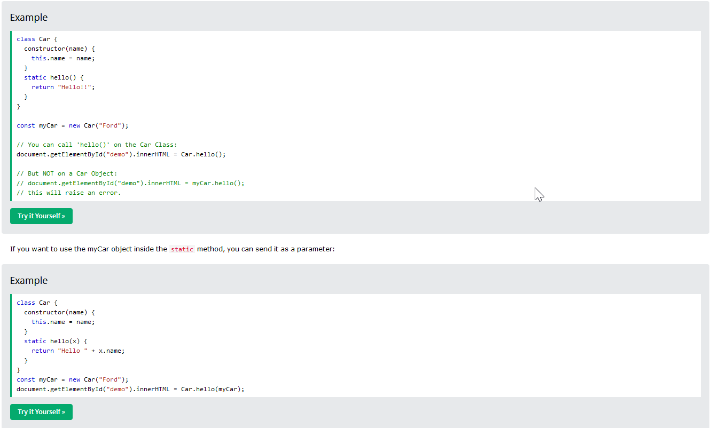

| TO COVER |
- Static initialization blocks
- Polymorphism in oop(opbject oriented programming)
|
| constructor() |
Class must contains the constructor (constructor()) function that is used to initialization of
created object properties.
If you do not define a constructor method, JavaScript will add an empty constructor method.The
constructor method is called automatically when a new object is created.
const myCar1 = new Car("Ford", 2014); uses constructor - each and every "new xyz" uses constructor
|
| Defining classes |
|
| scrict mode always on in class |
The body of a class is executed in strict mode even without the "use strict" directive. |
Inheritance |
- The derived class has access to all public properties of the parent class. In JavaScript,
derived classes are declared with an extends clause, which indicates the class it extends from.
- 'extends' is used to create class that inhirts from other class: class XYZ extends ABC
- {... super(abc)} - super()inhirits properties/method from 'parent' class.
|
| Hoisting |
Unlike functions, and other JavaScript declarations, class declarations are not hoisted.That
means that you must declare a class before you can use it |
| Private - #xyz |
- A private field is an identifier prefixed with # (the hash symbol).
The hash is an integral part of the field's name, which means a private property can never
have name
clash with a public property.
In order to refer to a private field anywhere in the class, you must declare it in the class
body
(you
can't create a private property on the fly).
Apart from this, a private field is pretty much equivalent to a normal property.
- A class method can read the private fields of other instances, as long as they belong to the
same class.
However, if anotherColor is not a Color instance, #values won't exist. (Even if
another class has an identically named #values private field,
it's not referring to the same thing and cannot be accessed here.) Accessing a nonexistent
private property throws an error instead of returning undefined like normal properties do.
If you don't know if a private field exists on an object and you wish to access it without
using try/catch to handle the error, you can use the in operator
- There are some limitations in using private properties: the same name can't be declared
twice in a single class, and they can't be deleted. Both lead to early syntax errors.
|
| Getters and setters |
It looks as if the object has a property called red — but actually, no such property
exists on the instance!
There are only two methods, but they are prefixed with get and set, which
allows them to be manipulated as if they were properties.
|
| static |
Static class methods are defined on the class itself. You cannot call a static method on an
object, only on an object class.

|